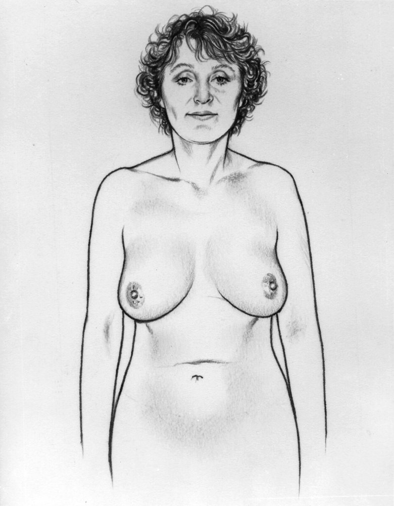
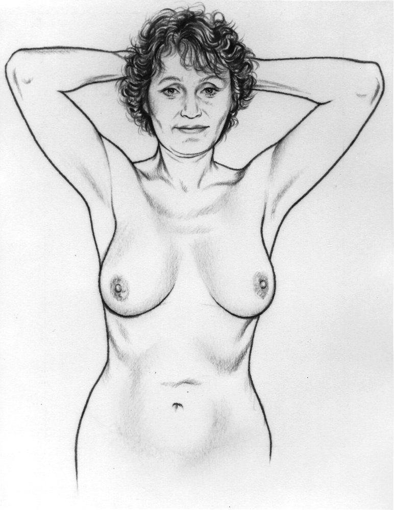
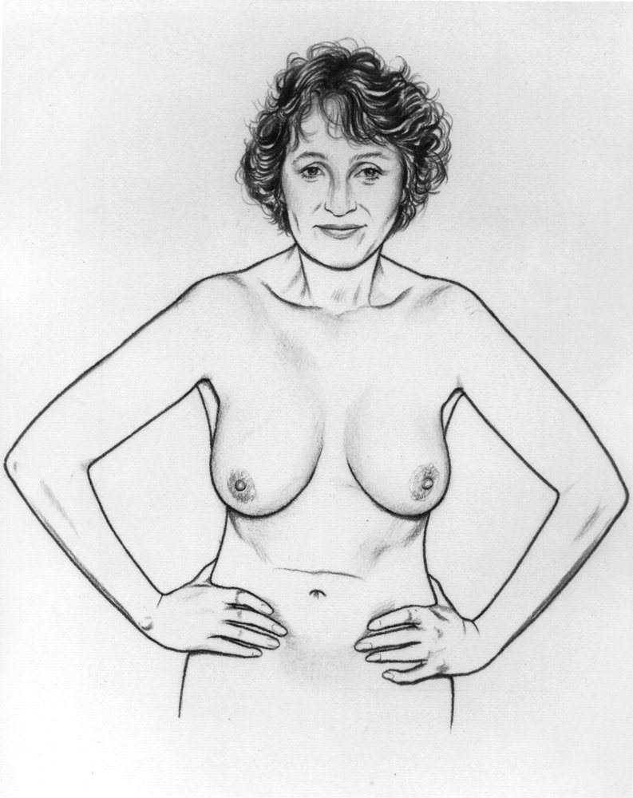
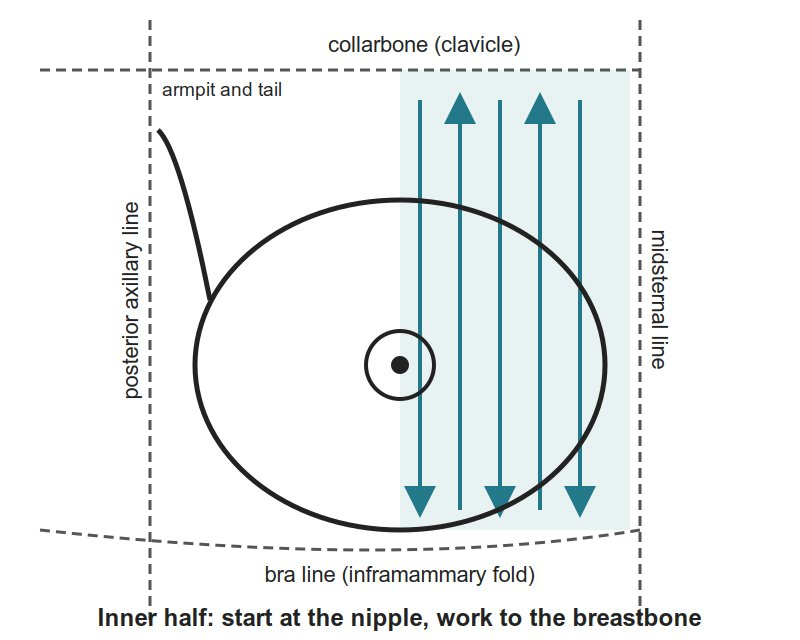
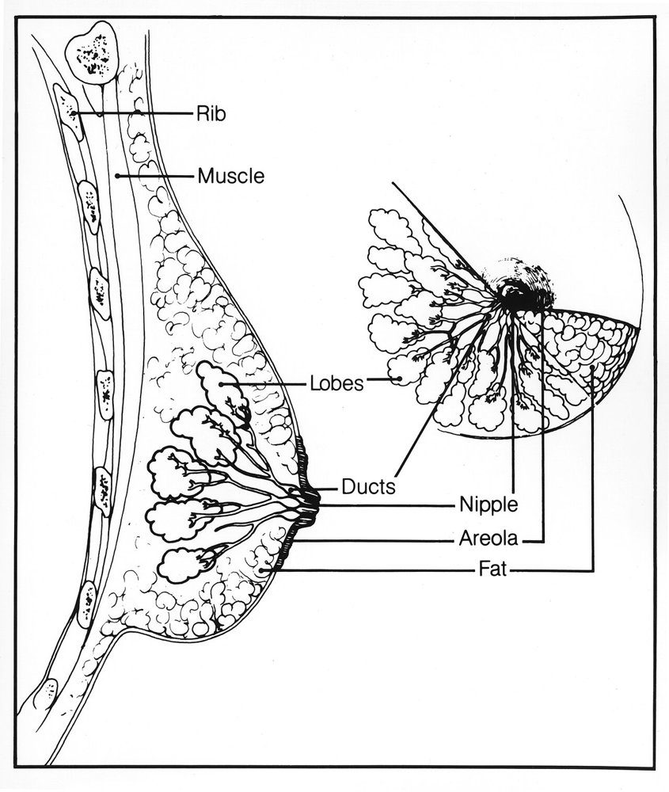
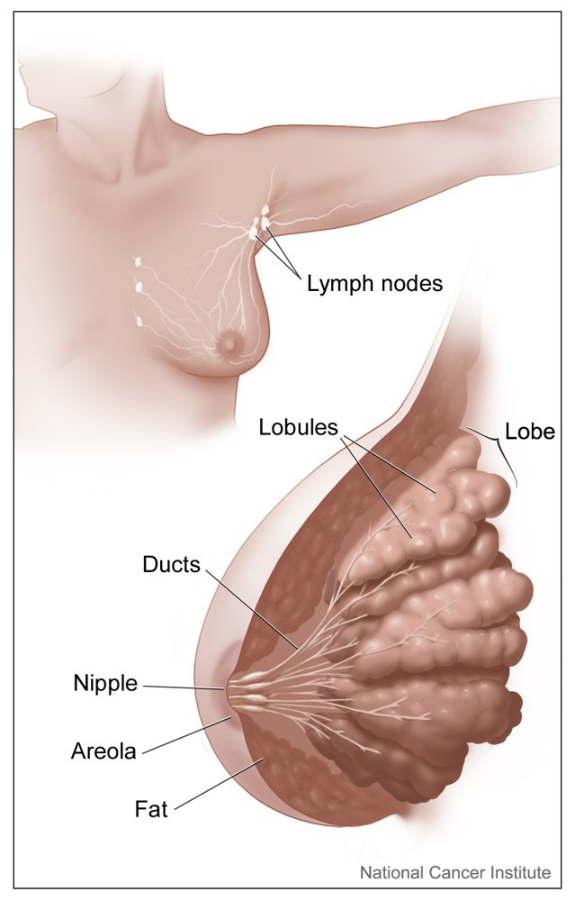

The general approach first (chaperone, draping, timing), then each part of the exam in the order you do it: what to look for, each manoeuvre (numbered steps and what counts as positive), and its pearls. Built from the Breast Exam session guide; pictures are line drawings and diagrams only.
Look: everything shown. Pick a region below to jump to it.
Inspect, sitting → Palpate the breast, lying → Palpate the nipple → Axillary nodes
Compare one side with the other. Be systematic (the same pattern every time), and protect modesty and comfort: offer a chaperone, say each step before you do it, and uncover one breast at a time for palpation.
General approach
Every breast exam
The general approach
Say it first (TOSCE): "Hello, I'm ___, a medical student. Can I check your name and date of birth? I'd like to examine your breasts, which means first looking at them while you sit up, then feeling them while you lie down, and feeling the lymph nodes under your arms. Would you like a chaperone in the room? You can ask me to stop at any time. Have you noticed any lumps or other changes?" Then wash your hands.
Chaperone: offer or bring one
Be reassuring and gentle: many people feel apprehensive about this exam; tell the patient what you are about to do before each step, using appropriate terminology (plain, respectful words)
Draping: full exposure of the chest for inspection only; during palpation, cover one breast while you examine the other (draping, modesty and comfort are part of the objective)
Timing: breasts swell and become more nodular before a period; the best time is 5-7 days after the period starts. A lump found just before a period should be re-checked after it
Inspect: sitting, undressed to the waist, both breasts at once
Palpate: lying down (supine), one breast at a time, then the nipple, then the axilla
Breast self-examination: ask whether she examines her own breasts; if not, you can show her the technique and watch her repeat it
Tap to reveal
Inspection
FoM · Breast Exam · 4 manoeuvres
What to look for
Before the manoeuvres
Say first: "I'd like to look at your breasts while you sit up, with your gown open to the waist. I'll ask you to move your arms into a few positions. Is that all right?"
Patient sitting, undressed to the waist. In each position, look at:
skin: colour (redness → infection or inflammatory breast cancer); thickening with prominent pores (like orange peel) → blocked lymph drainage, suggests cancer
size and symmetry: some difference in size, including the areolae, is common and usually normal
contour: masses, dimpling, flattening of the normally rounded (convex) breast → suggests cancer
nipples: size and shape, the direction they point, rash or ulceration, discharge
asymmetry in direction → an underlying cancer · rash or ulcer → Paget's disease of the breast
a nipple that has always been inverted is usually a normal variant · a recent or fixed flattening or pulling in (retraction) → suggests cancer
Tap to reveal
Anything visibly different
Arms at sides
Skin, size and symmetry, contour, nipples

Steps
Patient sits, arms relaxed at her sides
Compare the two sides
Positive
Redness, skin thickening, flattening, a mass, nipple asymmetry or retraction (normal: mild size difference)
Tap to reveal
Dimpling or a pull-in hidden at rest
Arms over head
Dimpling or retraction that is otherwise hidden

Steps
Patient raises both arms over her head
Look at the contours again
Positive
Dimpling or a skin pull-in → suggests a cancer tethered to the skin and chest-wall tissue
Tap to reveal
Hands pressed on hips
Dimpling (tightens the pectoral muscles)

Steps
Patient presses her hands firmly against her hips
Look at the contours again
Positive
Dimpling or retraction · occasionally benign (fat necrosis after injury, duct ectasia), but always investigate
Tap to reveal
Leaning forward
Asymmetry of the breast or nipple
Steps
For large breasts: patient stands and leans forward, supported by a chair back or your hands
Look at both breasts and nipples
Positive
Asymmetry, or retraction of the nipple and areola → suggests a cancer
Tap to reveal
Palpating the breast
FoM · Breast Exam · 4 manoeuvres
What to look for
Before the manoeuvres
Say first: "Now I'd like to feel your breasts while you lie down. I'll cover one side while I examine the other, and tell you before each step. Tell me if anything is tender, and I'll stop whenever you ask."
Patient lying down (supine): palpation works best when the breast tissue is flattened
The area to cover is a rectangle: from the collarbone (clavicle) to the bra line (inframammary fold), and from the middle of the breastbone (midsternal line) to the posterior axillary line, well into the armpit for the tail of the breast (tail of Spence)
Technique
pads of the 2nd, 3rd and 4th fingers, fingers slightly bent
small circles at each spot, at light, medium and deep pressure
the vertical strip pattern is the best-tested way to find a lump (better than circles or wedges)
about 3 minutes per breast
What you are feeling for
consistency: varies a lot from person to person (firm gland tissue, soft fat); some lumpiness (nodularity) is normal, more before a period. A firm ridge along the lower edge of a large breast is the normal inframammary ridge, not a tumour
tenderness: for example, the normal fullness before a period
nodules: any lump that feels different from, or larger than, the rest of the breast
Patient rolls onto the opposite hip, hand on her forehead, shoulders kept flat on the table
Start in the armpit; palpate in a straight line down to the bra line
Move the fingers inward, palpate up to the collarbone
Keep going in overlapping vertical strips until you reach the nipple
Positive
A lump that feels different from the tissue around it
Tap to reveal
Medial (inner) half
Lumps in the inner breast

Steps
Patient lies with shoulders flat, hand at her neck, elbow lifted level with the shoulder
Palpate down from the nipple to the bra line, then back up to the collarbone
Continue in overlapping vertical strips to the midsternal line
Positive
A lump that feels different from the tissue around it
Tap to reveal
Something under the nipple
Nipple
Changes under the nipple
Steps
Palpate each nipple, noting its elasticity
Positive
Thickening and loss of elasticity → suggests an underlying cancer
Tap to reveal
What a lump is attached to
Mobility of a mass
What the lump is attached to

Steps
Gently move the breast near the mass and watch for dimpling
Try to move the mass with the arm relaxed
Try again with her hand pressed on her hip
Positive
Fixed with the arm relaxed → attached to the ribs and chest muscles between them · fixed only with the hand on the hip → attached to the pectoral fascia (the layer over the chest muscle)
Tap to reveal
Pearls
Remember
If you find a lump, describe it
location: by quadrant or clock face, with the distance from the nipple in cm
size (cm), shape (round or irregular), consistency (soft, firm, hard)
delimitation (clear edge or not), tenderness, mobility
⚠ A hard, irregular, poorly defined lump, fixed to the skin or the tissue underneath strongly suggests cancer
⚠ Pressing deeply, you may mistake a normal rib for a hard breast mass
Cysts and inflamed areas are often tender; some cancers are tender too
A lump in the tail of the breast can be mistaken for an enlarged axillary node, and the reverse
Say when reporting: "Breasts symmetric, no skin or nipple changes in any position; no masses on palpation of either breast or the axillary tails; nipples normal."
Tap to reveal
Axillary lymph nodes
FoM · Breast Exam · 1 manoeuvres
What to look for
Before the manoeuvres
Say first: "Last, I'd like to feel the lymph nodes under your arms, and above and below your collarbone. May I?"
Palpate the axillary nodes on both sides; sitting is preferable, though it can be done lying down
The node groups to cover: central (high in the armpit, against the chest wall), pectoral (front fold), subscapular (back fold), lateral (along the upper arm), then infraclavicular and supraclavicular (below and above the collarbone)
The OneNote guide stops at this point (it gives no hand technique for the armpit), so practise that in the session
Tap to reveal
Spread to the nodes
Axillary nodes
Enlarged or hard lymph nodes in the armpit

Steps
Sit the patient up (preferable; lying down also works)
Palpate the armpit on each side, and compare the two
Cover each group: central, pectoral, subscapular, lateral, then the infraclavicular and supraclavicular nodes
Positive
Enlarged or hard nodes → suggests the breast cancer has spread to the nodes (a lump in the tail of the breast can be mistaken for a node, and the reverse)
Tap to reveal
The male breast
FoM · Breast Exam · 2 manoeuvres
What to look for
Before the manoeuvres
Say first: "I'd like to look at and feel your chest and the tissue under your nipples. May I?"
Brief but important
Inspect the nipple and areola for nodules, swelling or ulcers
Palpate the areola and breast tissue for nodules
Tap to reveal
A nodule in a man
Male breast: inspect and palpate
Nodules, swelling or ulcers
Steps
Inspect the nipple and areola
Palpate the areola and the breast tissue
Positive
A nodule, swelling or ulcer
Tap to reveal
Fat, gland or cancer
Enlarged male breast
Soft fat or a firm disc of gland
Steps
Feel the enlarged breast
Tell apart soft fatty enlargement (obesity) from a firm disc of gland tissue (gynecomastia: a hormone imbalance between estrogen and androgens, sometimes from a drug)
Positive
Firm disc of gland = gynecomastia · a hard, irregular, off-centre or ulcerated lump is not gynecomastia
Tap to reveal
Pearls
Remember
⚠ A hard, irregular, off-centre or ulcerated lump is not gynecomastia: it suggests breast cancer
Tap to reveal
Videos
The draping clip is from the Health Education Media Library (Western Libraries), CC BY-NC 4.0, played from the library's own server. The walkthrough and the axillary clip are from Geeky Medics on YouTube. Each opens only when you tap it.
Image credits
Images reused under their open licences (Creative Commons or public domain). Some were cropped to hide faces.
Arms at sides: Unknown Illustrator (U.S. National Cancer Institute collection), Public domain, source
Arms over head: Unknown Illustrator (U.S. National Cancer Institute collection), Public domain, source
Hands pressed on hips: Unknown Illustrator (U.S. National Cancer Institute collection), Public domain, source
Axillary nodes: Don Bliss (Illustrator) (National Cancer Institute), Public domain, source
Mobility of a mass: Susan Spangler (Illustrator) (National Cancer Institute), Public domain, source
Palpating the breast landmarks diagram: Noor Simsam (drawn for this page, make_diagrams.py), CC0 (own drawing), source
Lateral (outer) half: Noor Simsam (drawn for this page, make_diagrams.py), CC0 (own drawing), source
Medial (inner) half: Noor Simsam (drawn for this page, make_diagrams.py), CC0 (own drawing), source
.jpg){kind=link}
_(1).jpg){kind=link}
_(2).jpg){kind=link}